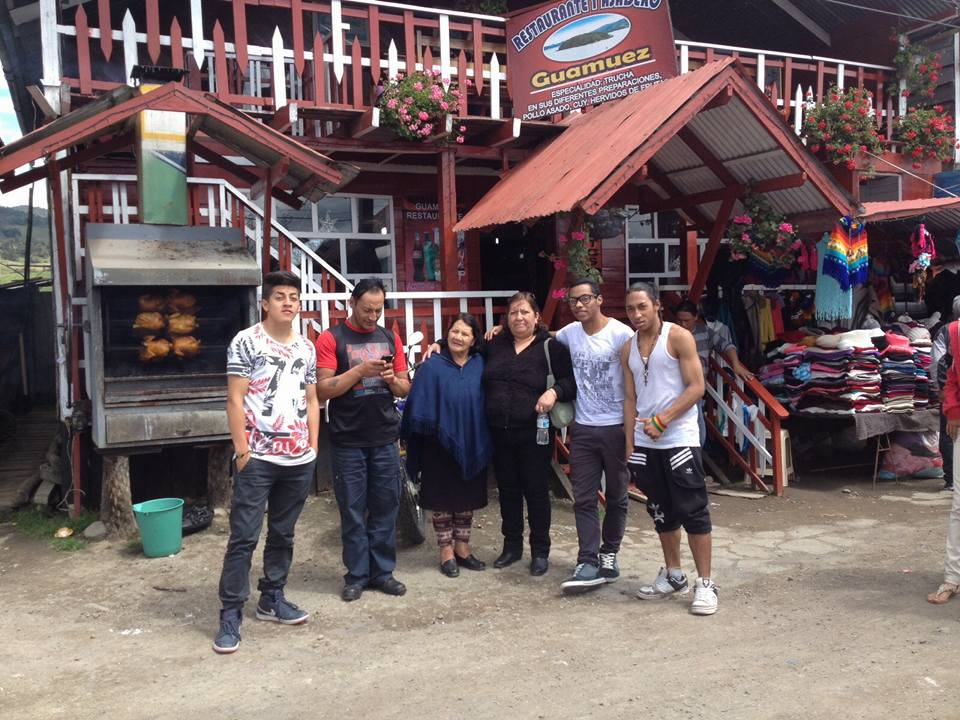
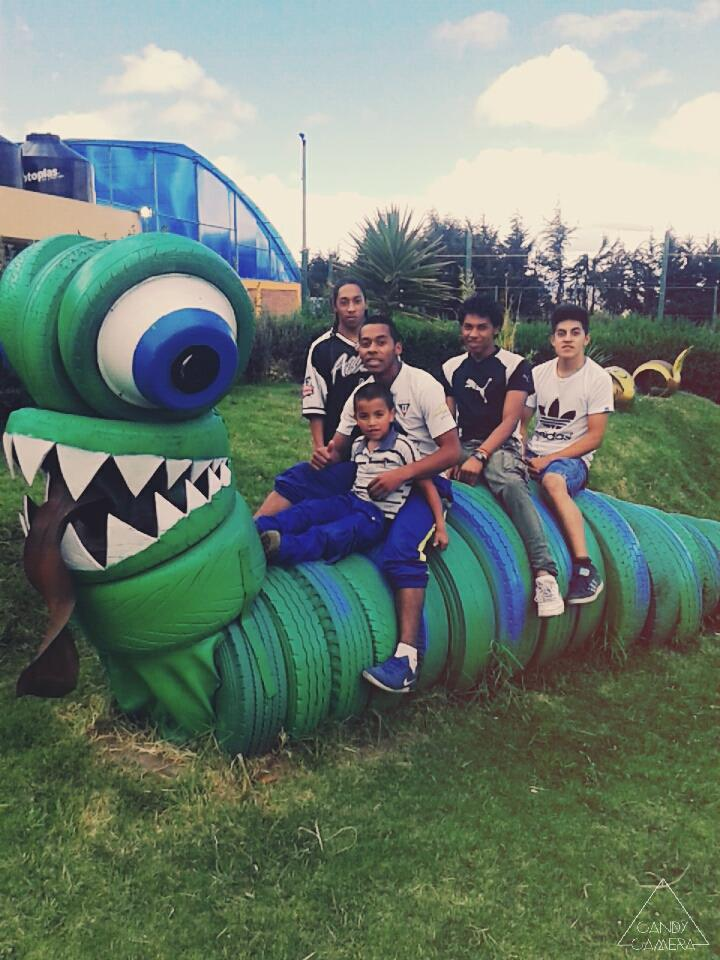
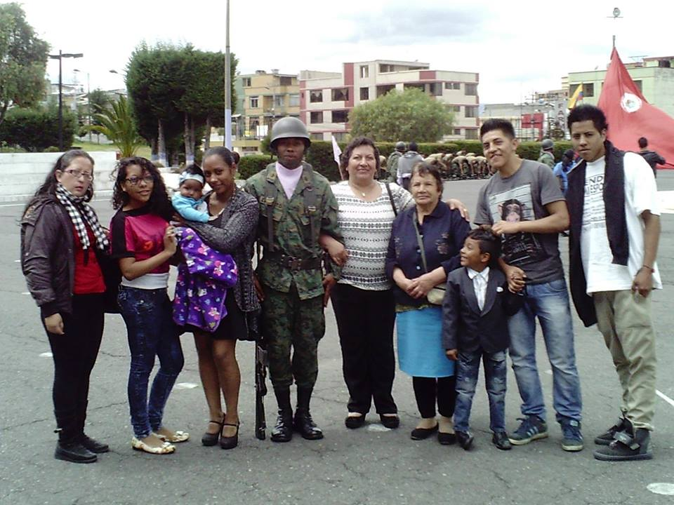
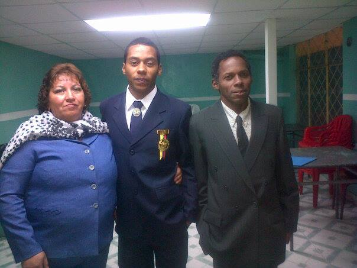

El ser parte de una familia es una gran bendición. Tu familia te puede proporcionar compañía y felicidad, ayudarte a aprender principios correctos en un ambiente de cariño y prepararte para la vida eterna.

“Debes recordar que la familia nace a menudo de la sangre pero no depende de la sangre. Tampoco es exclusivo de la amistad. Los miembros de tu familia pueden ser tus mejores amigos. Y los mejores amigos, estén o no relacionados contigo, pueden ser tu familia.”
Trenton Lee Stewart

“Mi familia lo es todo. Soy lo que soy gracias a mi madre, a mi padre, a mi hermano, a mi hermana… porque me han dado todo. La educación que tengo es gracias a ellos.”
Ronaldinho

“Esto es parte de lo que es una familia, no sólo es amor. Es saber que tu familia estará allí cuidando de ti. Nada más te dará eso. Ni el dinero. Ni la fama. Ni el trabajo.”
Mitch Albom

“Mis héroes son y fueron mis padres, no me imagino teniendo a otras personas como héroes.”
Michael Jordan